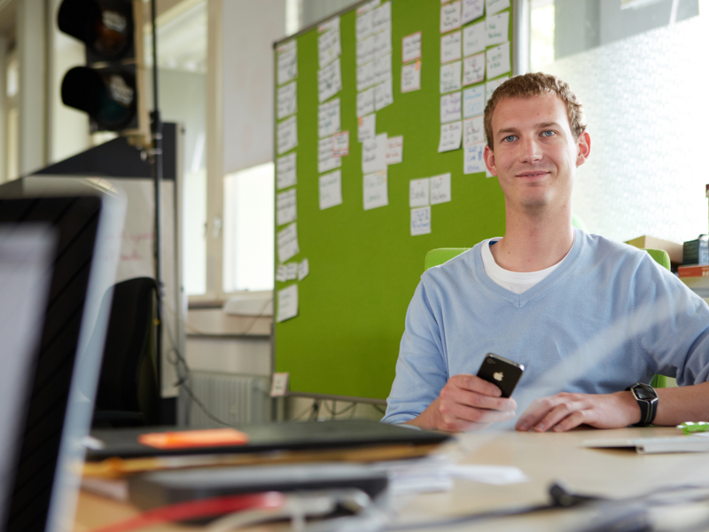
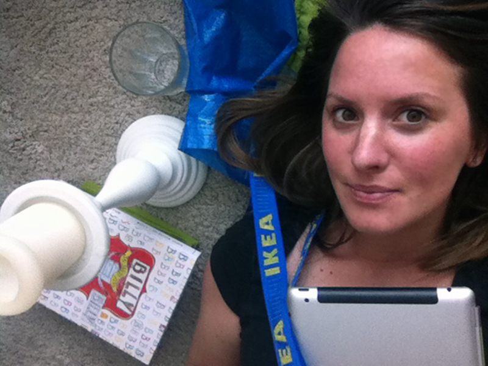
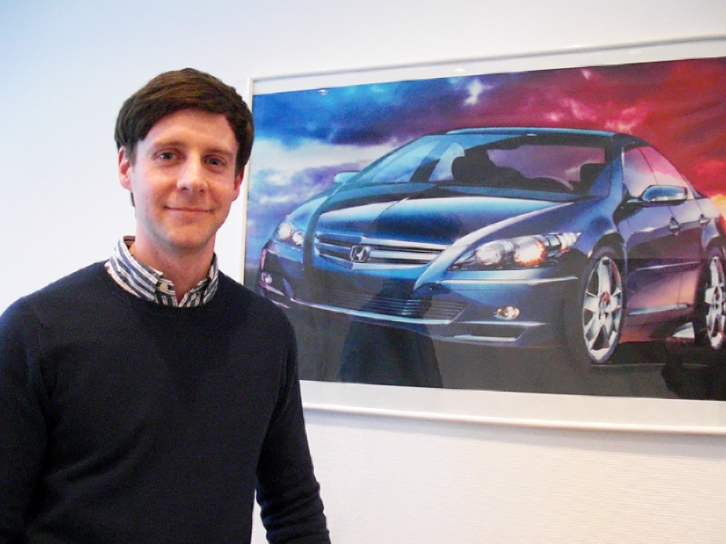
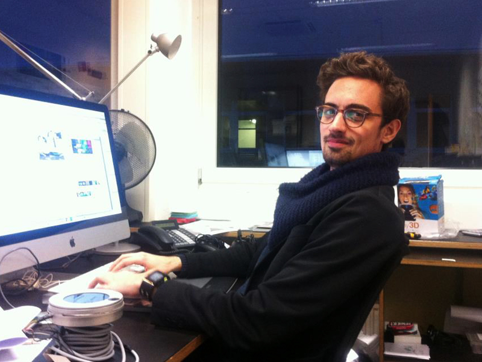
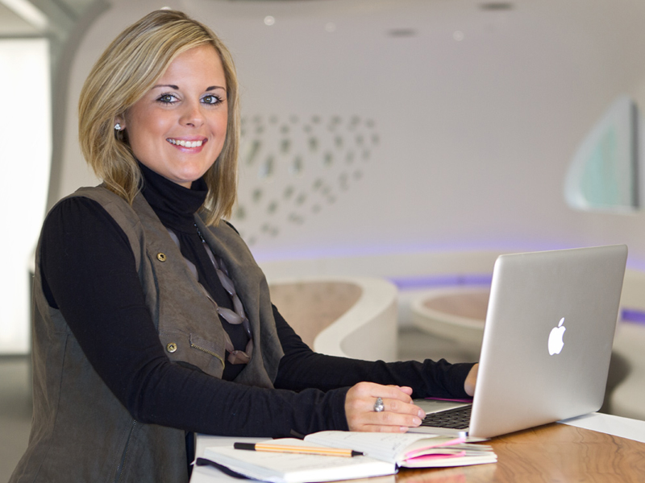
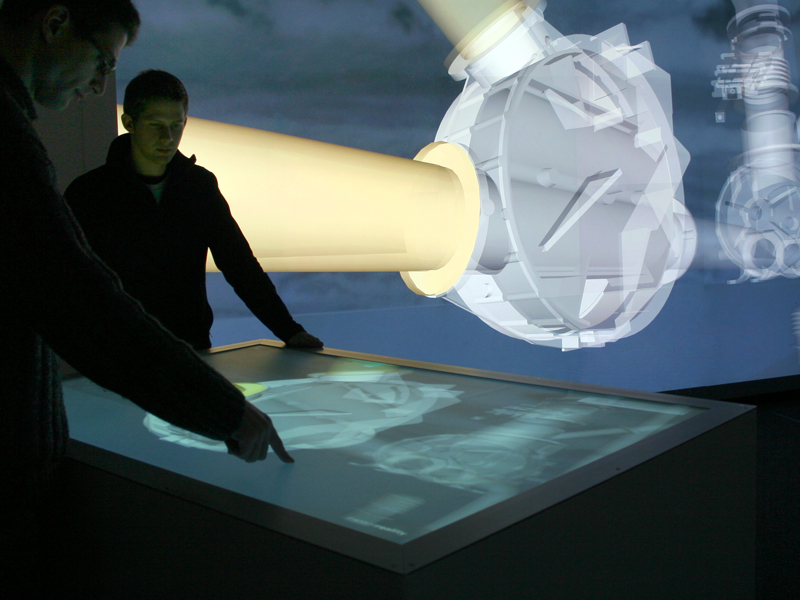
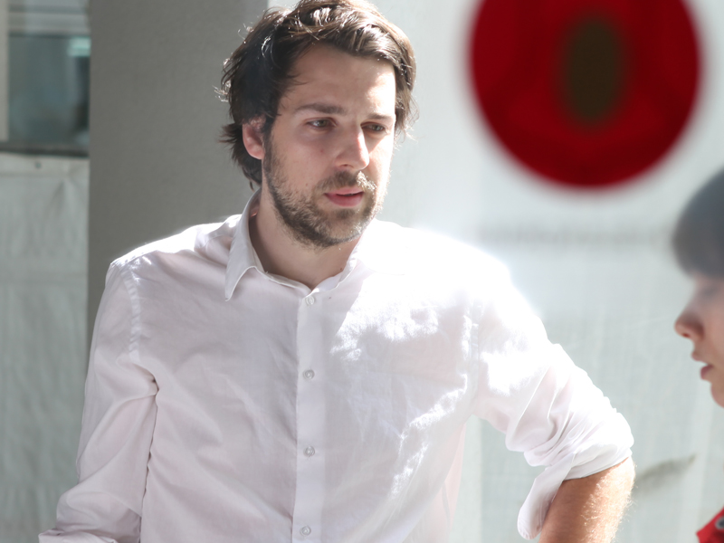

Nach einem Interactive Media Design Studium stehen Ihnen viele Berufsrichtungen offen. Das interdisziplinäre Studium ermöglicht die Ausübung von Berufen in den vermittelten Disziplinen Technik/Informatik, Design und Management/ Marketing.
Daneben stehen besonders die Berufe offen, die Schnittstellenkompetenzen erfordern, also zwischen den Disziplinen vermitteln, diese koodinieren, bzw. mit diesen im Team kooperieren. Ideal ist die Ausbildung ebenfalls für eine selbstständige Tätigkeit.

User Experience Architect
- Analyse von Nutzeranforderungen
- Planen, Durchführen & Auswerten von Usability-Tests
- Konzeption von Navigation & Inhalten
- Gestaltung von Interaktionen & Wireframes
- Präsentation von Ideen, Konzepten und Ergebnissen bei Kunden

Screen Designer
- Entwicklung von Gestaltungsprinzipien für bildschirmbasierte Medien
- Anlegen von Layouts
- Entwickeln und Gestaltung von Navigationskonzepten
- Entwickeln zielgruppenspezifischer gestalterischer Lösungen
- Erstellen von Styleguides

Interaction Designer
- Planen und Gestalten von Handlungsabläufen
- Definition und Entwicklung von Anwendungscharakter und -verhalten
- Konzeption von Interaktionsprinzipien
- Gestaltung von Interaktionen für screenbasierte Medien und Installationen
- Prototypische Umsetzung von Interfaces
Web Developer
- Technische Entwicklung und Betreuung
von Internetlösungen - Mitarbeit bei Konzeption und Projektplanung
- Beratung in technischen Fragen der Frontend- Programmierung
Software Developer
- Technische Entwicklung von Individualsoftware u. Web-Lösungen
- Kundenberatung und Lösungsentwicklung
- Software-Design
- Beratung des Projektmanagements
Creative Coder
- Technische Entwicklung von Datenvisualisierungsprojekten und Installationen
- Mitarbeit bei Konzeption und Projektplanung
- Kundenberatung und Lösungsentwicklung
Online Marketing Spezialist
- Kunden- und Team-Beratung
- Entwicklung, Planung und Betreuung von digitalen Unternehmens- und Marken-Auftritten
- Cross-Plattform Kampagnenplanung
- Betreuung von Dienstleistern
Account Manager
- Kundenpflege und strategische Kundenentwicklung
- Kundenberatung in Digital Media Projekten und bei der digitalen Markenführung
- Planung, Budgetierung und Steuerung von Projekten
Projektmanager
- Planung, Organisation und Koordination von Projektabläufen
- Controlling
- Durchführen von Recherchen und Marktanalysen
- Halten von Präsentationen
„Das konzeptionelle Denken aus Nutzer- und Unternehmenssicht ist bei Abgängern des Studiengangs IMD sehr gut ausgeprägt. Bei IMD-Studierenden weiß man einfach, dass die gängigen Agentur-Methoden bekannt sind und sitzen.“Wolfgang Henseler, Geschäftsführer Sensory-Minds, Offenbach
- 
- 
- 
- 
- 
-

- 
- 
„Durch das Praktikumssemester konnte ich bereits in das Unternehmen hineinschnuppern, in dem ich jetzt arbeite.“Max Mustermann, Student